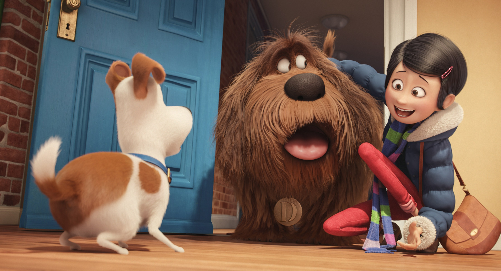

<!DOCTYPE html><html lang="es"></html><head><meta charset="UTF-8"/><title>Movi.es</title><meta name="viewport" content="width=device-width, user-scalable=no, initial-scale=1.0, maximum-scale=1.0, minimum-scale=1.0"/><link href="https://fonts.googleapis.com/css?family=Lato:400,700" rel="stylesheet"><link rel="stylesheet" href="css/fontawesome-all.min.css"/><link rel="stylesheet" href="css/normalize.css"/><link rel="stylesheet" href="css/estilos.css"/></head><body><header class="Movie"><navbar class="Movie-navbar"><div class="Movie-navbar-brand"><figure class="Movie-navbar-brand-logo"></figure><h1 class="Movie-navbar-brand-nombre">Movie.es</h1></div><form class="Movie-navbar-form"><input class="Movie-navbar-form-input" type="search" name="" placeholder="Busca tu peli, actor, actriz o director favorito"/></form><a class="Movie-navbar-usuario" href="#"><span class="Movie-navbar-usuario-nombre">Bambi Rodríguez</span></a></navbar></header><aside class="Menu"><ul class="Menu-list"><li class="Menu-list-item"><a href="#"><i class="fa fa-home"></i><p>Home</p></a></li><li class="Menu-list-item"><a href="#"><i class="fa fa-fire"></i><p>Trending</p></a></li><li class="Menu-list-item"><a href="#"><i class="fa fa-heart"></i><p>Más likes</p></a></li><li class="Menu-list-item"><a href="#"><p class="fa"></p><span>Ajustes</span></a></li></ul></aside><section class="Peliculas"><h2 class="Peliculas-title">Ahora en el Cine</h2><div class="Peliculas-container"><div class="Peliculas-container-item"><div class="Peliculas-container-overlay"><h3 class="Peliculas-container-overlay-title">The Secret Life of Pets</h3><p class="Peliculas-container-overlay-parrafo">The quiet life of a terrier named Max is unpended when his owner takes in Duke, a stray whom Max instantly dislikes.</p></div></div><div class="Peliculas-container-item"><div class="Peliculas-container-overlay"><h3 class="Peliculas-container-overlay-title">The Secret Life of Pets</h3><p class="Peliculas-container-overlay-parrafo">The quiet life of a terrier named Max is unpended when his owner takes in Duke, a stray whom Max instantly dislikes.</p></div></div><div class="Peliculas-container-item"><div class="Peliculas-container-overlay"><h3 class="Peliculas-container-overlay-title">The Secret Life of Pets</h3><p class="Peliculas-container-overlay-parrafo">The quiet life of a terrier named Max is unpended when his owner takes in Duke, a stray whom Max instantly dislikes.</p></div></div></div><h2 class="Peliculas-title">Aclamadas por la critica</h2><div class="Peliculas-container"><div class="Peliculas-container-item"><div class="Peliculas-container-overlay"><h3 class="Peliculas-container-overlay-title">The Secret Life of Pets</h3><p class="Peliculas-container-overlay-parrafo">The quiet life of a terrier named Max is unpended when his owner takes in Duke, a stray whom Max instantly dislikes.</p></div></div><div class="Peliculas-container-item"><div class="Peliculas-container-overlay"><h3 class="Peliculas-container-overlay-title">The Secret Life of Pets</h3><p class="Peliculas-container-overlay-parrafo">The quiet life of a terrier named Max is unpended when his owner takes in Duke, a stray whom Max instantly dislikes.</p></div></div><div class="Peliculas-container-item"><div class="Peliculas-container-overlay"><h3 class="Peliculas-container-overlay-title">The Secret Life of Pets</h3><p class="Peliculas-container-overlay-parrafo">The quiet life of a terrier named Max is unpended when his owner takes in Duke, a stray whom Max instantly dislikes.</p></div></div></div><h2 class="Peliculas-title">No te debes perder</h2><div class="Peliculas-container"><div class="Peliculas-container-item"><div class="Peliculas-container-overlay"><h3 class="Peliculas-container-overlay-title">The Secret Life of Pets</h3><p class="Peliculas-container-overlay-parrafo">The quiet life of a terrier named Max is unpended when his owner takes in Duke, a stray whom Max instantly dislikes.</p></div></div><div class="Peliculas-container-item"><div class="Peliculas-container-overlay"><h3 class="Peliculas-container-overlay-title">The Secret Life of Pets</h3><p class="Peliculas-container-overlay-parrafo">The quiet life of a terrier named Max is unpended when his owner takes in Duke, a stray whom Max instantly dislikes.</p></div></div><div class="Peliculas-container-item"><div class="Peliculas-container-overlay"><h3 class="Peliculas-container-overlay-title">The Secret Life of Pets</h3><p class="Peliculas-container-overlay-parrafo">The quiet life of a terrier named Max is unpended when his owner takes in Duke, a stray whom Max instantly dislikes.</p></div></div></div></section></body>